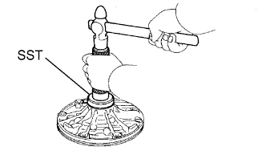
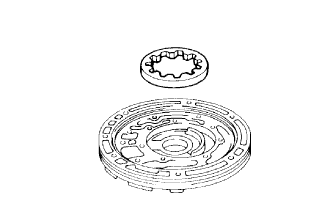
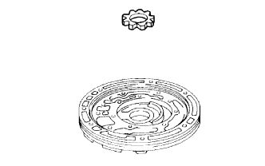
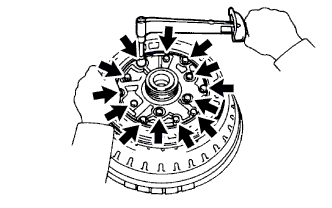
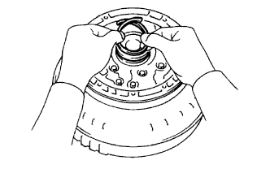
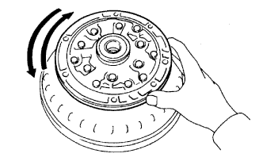
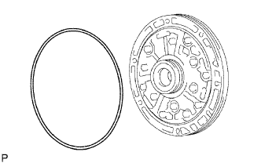

МАСЛЯНЫЙ НАСОС > ПОВТОРНАЯ СБОРКА |
| 1. УСТАНОВИТЕ САЛЬНИК ПЕРЕДНЕГО МАСЛЯНОГО НАСОСА |
|  |
С помощью SST и молотка установите новый сальник.
Покройте кромку сальника универсальной консистентной смазкой.
| 2. ЗАКРЕПИТЕ КОРПУС ПЕРЕДНЕГО МАСЛЯНОГО НАСОСА |
Поместите корпус масляного насоса на муфту гидротрансформатора.
| 3. УСТАНОВИТЕ ВЕДОМУЮ ШЕСТЕРНЮ ПЕРЕДНЕГО МАСЛЯНОГО НАСОСА |
|  |
Смажьте ведомую шестерню трансмиссионной жидкостью.
Установите ведомую шестерню на корпус масляного насоса.
| 4. УСТАНОВИТЕ ВЕДУЩУЮ ШЕСТЕРНЮ ПЕРЕДНЕГО МАСЛЯНОГО НАСОСА |
|  |
Смажьте ведущую шестерню трансмиссионной жидкостью.
Установите ведущую шестерню на корпус масляного насоса.
| 5. УСТАНОВИТЕ ВАЛ СТАТОРА В СБОРЕ |
|  |
Совместите болтовые отверстия вала статора с болтовыми отверстиями в корпусе масляного насоса и установите вал статора в корпус масляного насоса.
Заверните 13 болтов.
| 6. УСТАНОВИТЕ МАСЛОУПЛОТНИТЕЛЬНОЕ КОЛЬЦО БАРАБАНА МУФТЫ |
|  |
Покройте 2 новых маслоуплотнительных кольца трансмиссионной жидкостью.
Сожмите концы 2 маслоуплотнительных колец настолько, чтобы длина перекрывающего участка не превышала 8,0 мм (0,314 дюйма), а затем установите их в канавку вала статора.
| 7. ПРОВЕРЬТЕ ВРАЩЕНИЕ ВЕДУЩЕЙ ШЕСТЕРНИ МАСЛЯНОГО НАСОСА |
|  |
Убедитесь, что ведущая шестерня вращается плавно.
Снимите масляный насос с гидротрансформатора.
| 8. УСТАНОВИТЕ КОЛЬЦЕВОЕ УПЛОТНЕНИЕ КОРПУСА ПЕРЕДНЕГО МАСЛЯНОГО НАСОСА |
|  |
Установите новое кольцевое уплотнение на масляный насос.